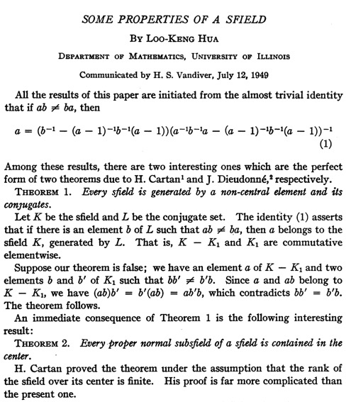

Cartan-Brauer-Hua Theorem
2016年3月23日
Cartan-Brauer-Hua For a proper subset divison ring K of division ring L, if the unit group of K is a normal subgroup of the unit group of L, K is central.
I will show two similar proof of the Cartan–Brauer–Hua theorem.
First Proof
Definition
$ L^* \equiv L \setminus \lbrace 0 \rbrace $, $[x,y] \equiv xyx^{-1}y^{-1}$ and $c_x(y) \equiv xyx^{-1}$
Given $g\in K^*$ and $a \in L \setminus K$
To prove: $[g,a]=1$
- It is trival that $[g,a] \;,\; [g,a+1]$ make sense and $$[g,a] = g (ag^{-1}a^{-1}) \in K$$ so is $[g,a+1]$.
- we have $$ c_g(a+1) = g(a+1)g^{-1} = c_g(a)+1 $$ hence $$ [g,a+1](a+1) = [g,a]a+1$$ or equivalently $$ [g,a+1]-[g,a])a=(1-[g,a+1])$$
- The assumption $[g,a+1] \neq [g,a]$ would lead to a contradiction that $a\in K$.hence
$$[g,a+1] \neq [g,a] \Leftrightarrow (a+1)g = aga^{-1}(a+1) \Leftrightarrow ga = ag $$
end of our proof of $[g,a]=1$.
Let $g,h \in K^*$,take any $a in L \setminus K$.then $h+a \in L \setminus K $. We have $[g,a+h]=[g,a]=1$ hence $gh = hg$,thus every element of $K$ commutes with $L$.
Second Proof by Hua Luogeng
